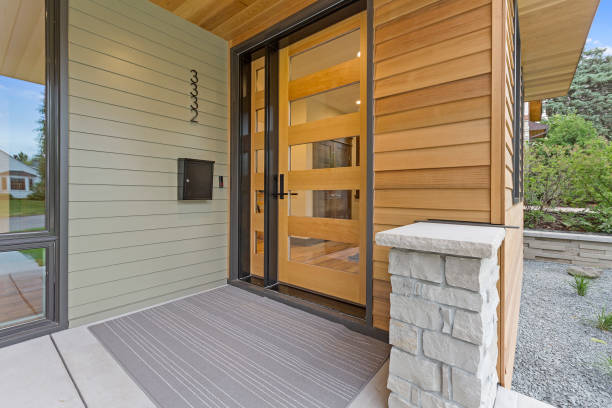

Entry doors serve as the main access point into a home and come in diverse materials and styles.
French doors are defined by their multiple Windows stretching the full length of the door. Often used as a link from an indoor space to a garden or balcony, these sophisticated types of internal doors are popular architectural focal points.
Glass panelling allows an abundance of natural light to enter the room.
These types of internal doors possess a classic look that effectively enhances the visual appeal of a property.
Providing a wide opening, French doors are ideal for the seamless transition between indoor and outdoor spaces.
Sliding doors are modern and space-saving solutions for both residential and commercial properties. These doors operate by gliding along a track rather than swinging open on hinges. Optimal space saver? Check! a sliding barn door.
Due to their sliding mechanism, these doors do not require extra space for door clearance, making them perfect for compact areas.
There are different types of sliding doors in terms of material. They are typically available in glass, wood, and metal. Being compatible with a wide variety of materials, they’ll blend seamlessly with different architectural styles.
Glass sliding doors allow copious natural light to enter, reducing the need for artificial lighting during the day.
They facilitate a smooth transition between indoor and outdoor spaces, \ especially in homes with patios or gardens.
Smart slide doors have entered the conversation with the dawn of smart “everything.” These types of sliding doors represent a modern advancement in home and facility entry systems. Operated through motion sensors and other smart triggers (security codes, cards, biometrics), they incorporate technology to facilitate ease of access and enhanced security. You’ll definitely be glad that these doors smartly slid into your life! a smart slide door.
Automatic door functions eliminate the need for physical interaction, making them especially useful for people carrying a bunch of shopping bags or individuals with mobility limitations. Say “hello” to efficient flow management in both domestic and commercial settings.
Works best for compact spaces as no swing allowance is required.
Options for card entry, codes, or biometric data increase security levels compared to traditional doors.
Being the intelligent entryways that they are, smart doors help conserve energy by minimizing the time the door remains open. As a result, there is reduced air exchange with the outside environment.